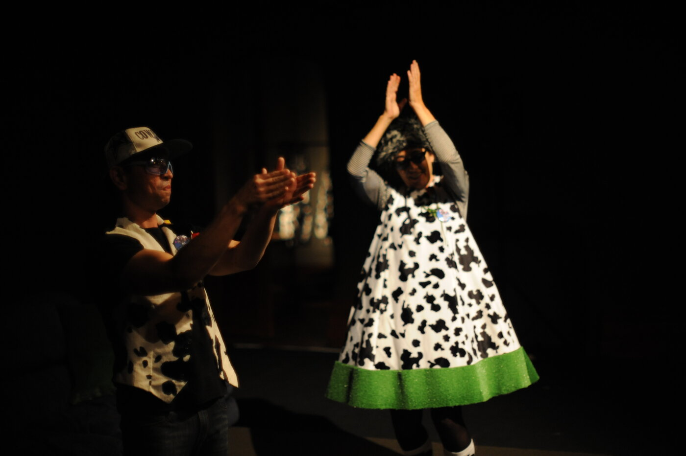
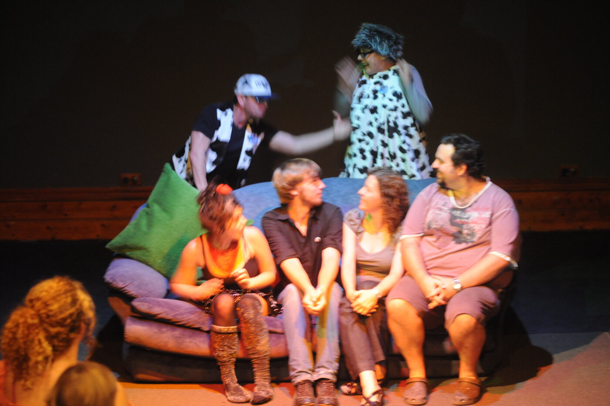
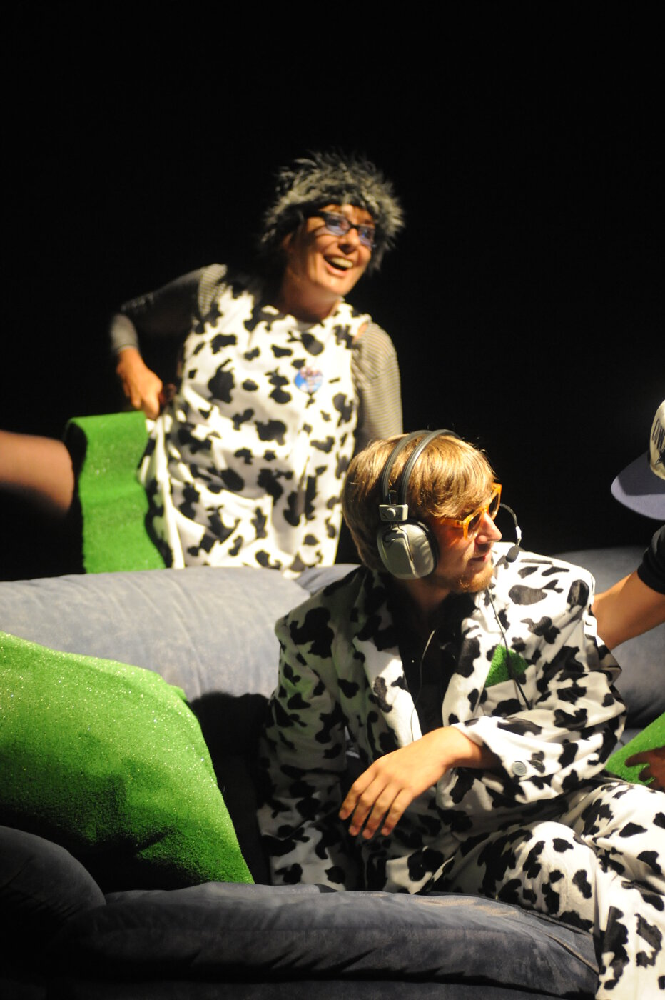
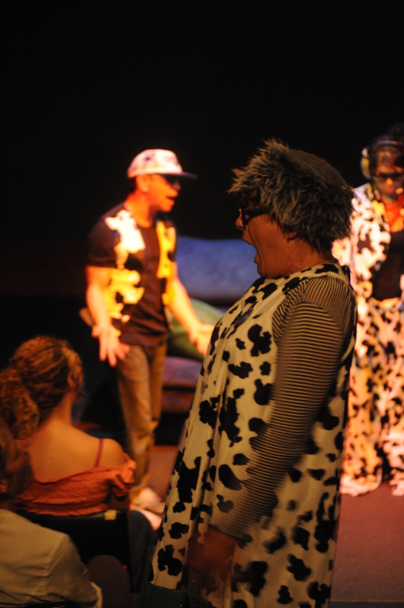
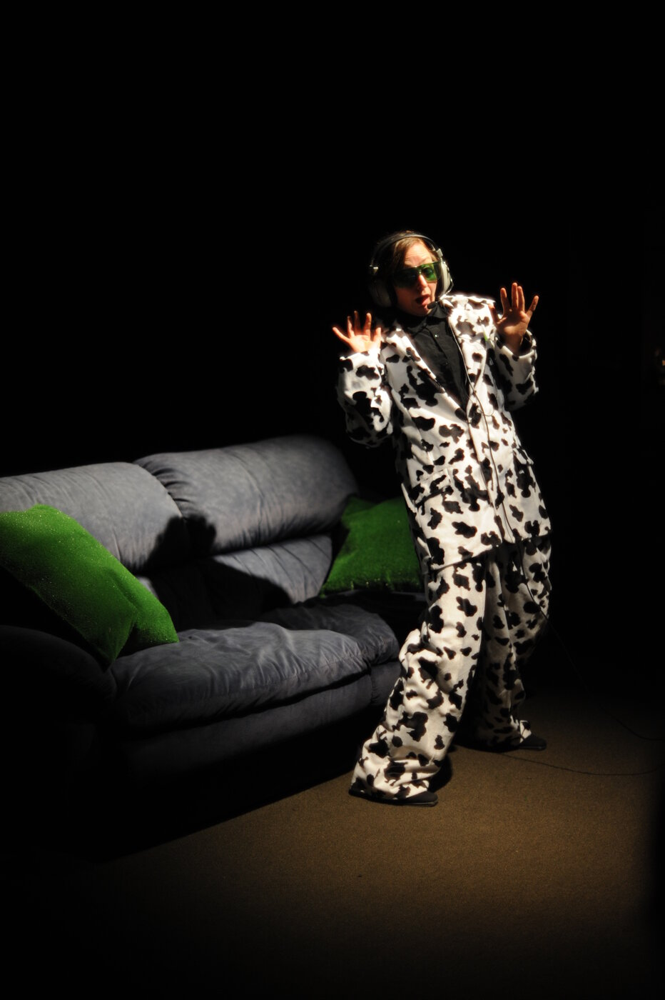

M Welcome to So You Think You Can Cow. This is an instructional text. How to Cow. Do what we say and say what we do. Don’t think. It doesn’t help. Just do as the instruction says.
D And do the instruction as soon as you hear it.
M Keep going until you hear the next one, and then shift.
D Use your whole body.
M Ready.
D Fire.
M Aim.
Margaret Cameron and I created So You Think You Can Cow after observing how interesting it can be to watch someone listening. From there, we developed a simple premise: what if an audience member performed the show, with instructions delivered through headphones?
For each show, audience members were selected in turn with a raffle. Each was dressed in a cow suit (they could choose between Armani or Versace) and sunglasses, fitted with headphones and radio mic, and guided on to stage.
D&M Give it up for Cow!
M Don’t think. It doesn’t help. Just do as the instruction says.
D Use your whole body.
M There’s no move that is wrong.
D Where you are is what you need.
M Nothing you can do is wrong.
D Inside and outside are the same.
The show was in four parts, four stomachs, four cows. For Cow 1, the audios inside (headphones) and outside (what the audience heard) were the same. For Cows 2, 3 and 4, inside and outside were different from each other.

The audience weren’t just watching — our goal was to help the audience bring down the power. They were invited to say moo like boo, to do the clip-clop, to cow it up. The Cow-handlers (Margaret and myself) remained onstage throughout. We were there to help, to encourage, to allow ourselves to appear foolish. For the final, all four Cows were brought back onstage, and we left the stage, leaving the audience applauding the audience.
M Everything is everywhere.
D This is culture.
M This is living.
D&M It’s not a real cow.
D&M It’s a conceptual cow.
Recording
Stomach 1 — the opening stomach — is the one to start with. The Cow and the audience hear the same track. What you hear is the show.
Outside audio — what the Cow and the audience heard. 11’15”
In Stomach 2, inside and outside diverge. This is what the Cow heard through the headphones.
Inside audio — Cow only. 7’58”
In Stomach 3, inside and outside diverge again. This is what the Cow heard through the headphones.
Inside audio — Cow only. 7’39”
In Stomach 4, inside and outside are again different. Two tracks.
Inside audio — Cow only. 4’58”
Outside audio — what the audience heard. 7’58”
All four Cows brought back onstage. The clip-clop, one more time.
Encore audio
Photographs



Reviews
“This is mad: actors in cow suits, audience shouting ‘moo’ and doing the clip-clop dance, conceptual cows and conceptual buckets. It’s a performance like nothing you’ve ever seen — and it’s a riot… This show is bonkers… Just go to see if you think you can cow.”
Kate Herbert — Herald Sun
“The surreal comedy carried audience participation to extremes, with random audience members performing the show. Donning headphones and cow-costumes, each new ‘cow’ received performance instructions via the headset. The best scene involved mad-cap physical theatre to a wild and incantatory Dadaist soundtrack.”
Cameron Woodhead — The Age
“…this utter oddity of a production subverts the [La Mama raffle] custom for slightly terrifying ends… completely bizarre, often hilarious and constantly confusing… What the whole cow theme signifies will differ for each viewer, but it’s a concept milked for all its worth.”
John Bailey — The Sunday Age
“Inverting the traditional role of the audience, So You Think You Can Cow is a madcap and hilarious performance, albeit one that’s dangerously reliant on the audience’s willingness to embrace the playful spirit of the show.”
Richard Watts
“…we find in So You Think You Can Cow the perfect comedic compromise … There are moments from left field that are incredibly funny.”
James Ayers — Arts Hub
Script
The complete script by Margaret Cameron and David Young, April 2009. Includes full stage directions and the inside/outside columns for Stomachs 2–4.
Further reading
Performances
Credits